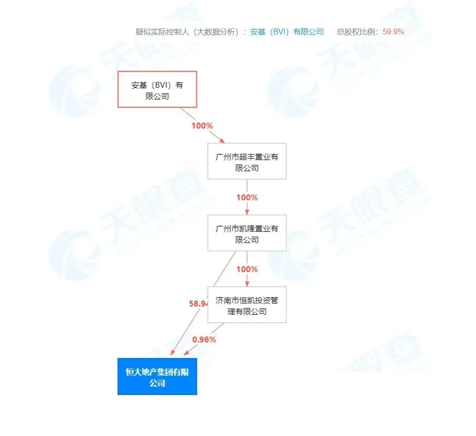
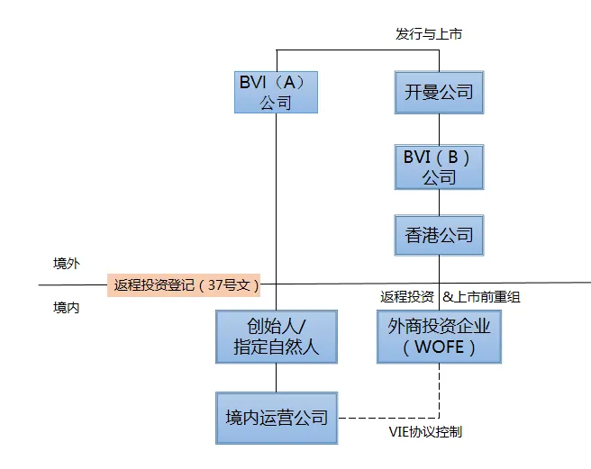
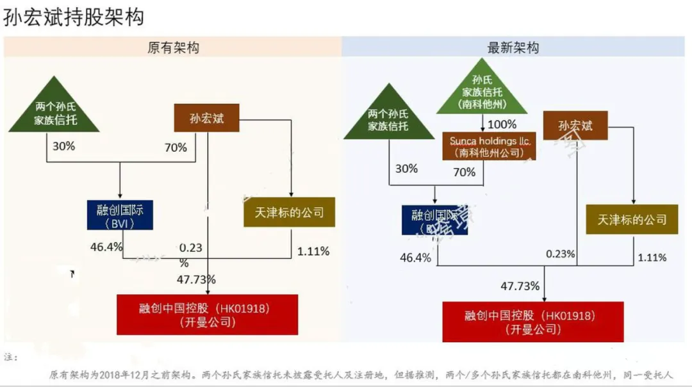

许家印卸任恒大地产董事长富豪的风险切割术与财富保全术
许家印卸任恒大地产董事长；富豪的风险切割术与财富保全术
原本没想写这篇文章，结果后台爆炸，一堆读者都在催更这个话题，那就简单说说。
文章分为三个部分，在能说得出的范围内，说一说。
NO. 1｜壹
工商资料显示，8月17日，恒大地产集团进行了相关工商登记变更。
恒大地产集团董事长由许家印变更为赵长龙，总经理、法人也由柯鹏变更为赵长龙，柯鹏仍任地产集团总裁。
这次变更意味着许家印不再担任恒大地产集团有限公司的任何职务（仍是董事局主席），至少从表面上来说，许家印目前和恒大地产之间，已经没有任何任职关系。
一般来说，企业中直接承担风险的人首先是企业自身，其次是企业的法定代表人，董事长只能算作公司的高管，一般不会是第一责任人。
追溯一下这次变更事件的本源：
恒大曾计划通过借壳上市回到A股，于2016年10月与深深房签订重组协议。因恒大在香港上市，属境外上市的类VIE架构，包括当时引入的一大帮战投，都是在为回A做准备，2017年11月，恒大地产集团董事长也从赵长龙变更为许家印。
后来的事，大伙都知道了，恒大回A失败。于是，近日地产集团的董事长时隔四年变更成赵长龙。
随着恒大资金问题的发酵、资金问题解决的滞后性（易引发恒大成被执行主体），社会情绪的发酵和躁动积累到一定程度，任何蛛丝马迹都容易被放在显微镜下无限放大、“过度解读”。
更何况，恒大本次变更从时间节点上来说， 不合时宜 ，选了个这样的节点；且近期，恒大总裁夏海钧被披露，分别减持恒大汽车和恒大物业股份，共计套现1.16亿元。
自家高管在这个节点都减持，让外人能有啥信心？“过度解读”自然也不足为奇。
话说，许家印任职过的公司，仅有4家，其中3家已经吊销，仅有的恒大地产集团，如今也已退出。不愧是富豪榜的常客，这风险切割的技术和意识，出类拔萃。
NO. 2｜贰
变更后，许家印和恒大地产集团目前再无任职关系。
退一万步来说，即使最终恒大没能解决资金危机，首先也是企业成为被执行主体，其次是法人，即便再往下深度执行，才会牵连到董事长。
此时辞去董事长一职，这操作，更多的人解读为是风险上的切割，舆论上关联上的直接切割。
但是，恒大的实控人变了吗？显然没有变，依然还是许家印：

安基（BVI）有限公司是一家离岸公司。
BVI公司为英属维尔京群岛注册的公司。英属维尔京群岛（The British Virgin Islands, 简称“BVI”）是世界上发展最快的海外离岸投资中心之一 ，BVI公司以其独特的公司特性，一直以来备受青睐，在中国企业境外上市构架中起着特殊的作用。
中国企业为实现境外上市的目的，通常会选择通过VIE（Variable Interest Entity，即可变利益实体）架构的组织架构方式，VIE即镜像映射原理，常用的VIE架构如下图：

BVI公司无需申报受益者，无需申报年利润及财务状况，而且无需做账报税缴税，只需保留资料反映经济状况即可；
BVI政府为BVI公司提供隐私保护，董事资料和受益人身份相对保密；BVI政府税率低，税务管制较少；在BVI境外经营所得利润无须缴纳利得税，税务处理简单；
BVI公司可以在世界各地银行开设离岸账户，账户信息隐秘无需披露，没有外汇管制。
再看看绿地，绿地的第一大股东是上海格林兰投资企业，穿透一下发现，上海格林兰投资企业的股东是上海格林兰壹投资管理中心等一系列带格林兰字样的有限合伙企业（绿地的员工、高管等合伙人持股）。
层层穿透后，会发现，有一家注册资金10万元，名为上海格林兰投资管理有限公司的企业，张玉良持股30.28%，即认缴金额3.028万元。
有限责任公司，股东以其出资额为限，对公司承担责任。从用最少的资金，去助力持有上市公司的股份，将杠杆最大化的同时，承担责任的风险最小化。
这也是一种风险最小化的妙术。
当然了，上海格林兰投资企业的股东不少，注册资本集中在数百万的较多，并非都仅有10万。但纵然观其股东的注册金情况，大多数遵循这个原理。
NO. 3｜叁
富豪们的风险切割术和财富保全术要顺利实施，绕不开一个工具：离岸信托。
在2018年初，参加完乐视股东发布会，超级网红段子手孙宏斌讲“不是壮士断腕，是头都断了.....有时候也要愿赌服输”。
不久，孙宏斌就开始有所筹划。 5月及6月，孙宏斌 设立 两个孙氏家族信托 ，装入约14%融创股份，总价值约138亿，受益人是其家庭成员。

2018年12月31日，孙宏斌又将所持融创总股份约32.47%，总价值约321亿的股票，转入了设在美国南科他州的离岸家族信托，受益人是孙宏斌及其家庭成员。至此，孙宏斌所持融创几乎全部股份都装入了孙氏家族信托。
保持公司控制权，隔离公司资产和家族资产的风险，或许是孙宏斌最想实现的。
而龙湖的吴亚军，更是玩信托的老手。 上市前，吴亚军 和 现在的前夫 蔡奎分别设立家族信托， 用家族信托搭上BVI公司，持有龙湖地产股份。

吴氏家族信托的受益对象为吴氏家族成员以及一个名为Fit All信托，蔡氏家族信托的受益对象为蔡氏家族成员以及Fit All。 Fit All受益对象为龙湖地产的员工及管理层。
以此，吴亚军夫妇分别用各自的家族信托持有各自上市公司的股权份额。
2012年8月，俩人把财产进行分割，所谓的分割，仅仅只需将各自从对方家族信托的受益人中除名而已。2012年11月，俩人被爆离婚。
2018年11月21日，吴亚军下将持有的龙湖集团43.98%股权(市值约512亿)，全部分派给其女儿蔡馨仪设立的另一只离岸全权信托基金。 母女的信托都指定同一受托人汇丰国际。
蔡馨仪便 顺利通过离岸 信托 ，获得 龙湖地产 价值512亿元的股份， 完成了财富传承。 通过离岸信托，公司的控股架构不变，不用纳税又不用小股东批准等。
而转让后，吴亚军还依然控制公司。
过往，富豪们设立离岸信托，是为了隔离婚姻风险、隔离公司与家族资产风险、防止子女争产反目成仇、避免复杂继承程序、将股份传继后依然保证家族的控股权。
那么现在，或许又加上一条，以防被税，以防被清0，行之有效的财富保全术。
还是大佬们更会玩。嗯，要理解大佬们，理解！
按日期浏览全部来源（同日按条目标识排序）